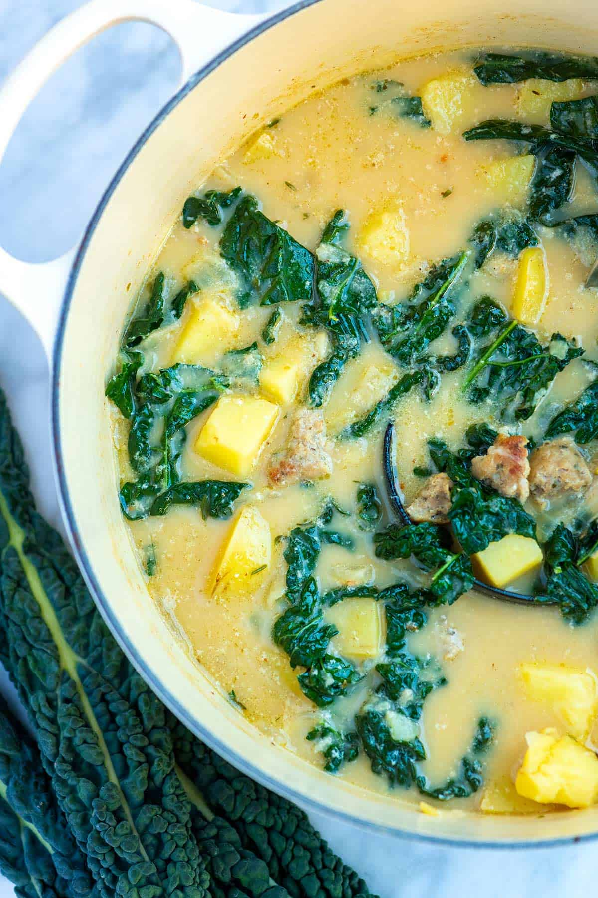

Sausage Potato Soup

You will love this soup
You will love this easy sausage and potato soup recipe with Italian sausage, potatoes, garlic, and kale. The soup is comforting and ultra-flavorful.
For the best potato soup, use Yukon Gold potatoes.
They have thin skins, so it is not necessary to peel them. They also become buttery and soft when cooked.
The red pepper flakes add heat to the soup. If you are using hot (spicy) Italian sausage to make the soup, you may want to eliminate the red pepper flakes.
Ingredients
- 1/2 pound fresh Italian sausage links, casings removed
- 2 cups chopped onion (8 ounces or 1 medium onion)
- 1 tablespoon minced garlic (3 cloves)
- 1/4 teaspoon dried oregano
- 1/4 to 1/2 teaspoon crushed red pepper flakes, depending on spice preference
- Salt and fresh ground black pepper
- 1 bay leaf
- 2 sprigs thyme
- 1 1/2 pounds potatoes, cubed (2 to 3 large)
- 5 cups chicken stock or broth, see our chicken stock recipe
- 1/4 cup to 1/2 cup heavy cream or half and half
- 4 cups chopped kale leaves with ribs removed or use baby kale
- 1/2 cup shredded parmesan cheese, optional (2 ounces)
- Pinch freshly grated nutmeg
Steps
- Heat the olive oil in a large pot or Dutch oven over medium heat. Add the sausage. Cook, breaking up the sausage with a wooden spoon until crispy; about 10 minutes.
- Add the onions and cook, stirring every few minutes until they begin to soften; 5 to 6 minutes. Stir in the garlic, oregano, crushed red pepper flakes, 1/2 teaspoon of salt, and 1/4 teaspoon of fresh ground black pepper. Cook, while stirring the garlic and spices around the pan, for about 1 minute.
- Add the bay leaf, thyme, and potatoes. Pour in the stock. Increase the heat to medium-high and cook until the broth just reaches a simmer, but before it begins to boil. Reduce the heat to medium-low, partially cover the pot with a lid, and simmer until the potatoes are cooked through; about 15 minutes. While the soup cooks, stir every once and a while. If the soup begins to simmer more aggressively, turn down the heat a bit.
- Uncover the soup and remove the bay leaf and thyme sprigs. Stir in the cream, kale, and parmesan cheese. Add a small pinch of nutmeg, and then taste the soup for seasoning. Adjust with more salt and pepper, as needed.
- Reduce the heat to low, cover with the lid and cook until the kale is wilted and soft; about 5 minutes more.